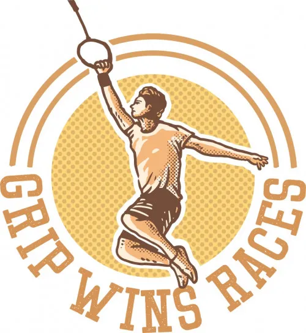

Iron Lake Challenge Austria
Produktprofil · Marktplatz-Daten 2026-10-14 · Verkaufsseiten-Recherche 2026-10-14 · Kategorien: Health & Fitness
- Iron Lake Challenge Austria ist ein/e Physisches Produkt in Health & Fitness, vertrieben über den Digistore24-Marktplatz von Anbieter rockyourgoal, gelistet seit 2023-01-24.
- Listenpreis $22.62 (single payment) — Checkout, Auslieferung und Rückerstattungen laufen über Digistore24 selbst, nicht über den Anbieter.
- Käuferschutz: keine standardisierte Garantie-Formulierung gefunden — Rückerstattungsbedingungen vor der Zahlung auf der offiziellen Seite prüfen.
Interesse an Iron Lake Challenge Austria? Aktueller Preis, Boni und Garantiebedingungen finden Sie auf der offiziellen Seite des Anbieters:
Offizielle Verkaufsseite ansehen
Affiliate-Link (Werbung) — wir verdienen ggf. eine Provision, ohne Mehrkosten für Sie.

Marktplatz-Daten
| Produkttyp | Physisches Produkt |
|---|---|
| Preis | $22.62 (Single payment) |
| Garantie/Rückgabe | Laut Verkaufsseite des Anbieters — vor dem Kauf auf der offiziellen Seite prüfen |
| Anbieter | rockyourgoal (gelistet seit 2023-01-24) |
Marktplatz-Beschreibung des Anbieters
Die Iron Lake Challenge Austria erfreut sich bei Läufern und Wanderern aus Österreich aber auch bei Österreich-Urlaubern großer Beliebtheit. Um die Sammlermedaille zu erhalten müssen die Teilnehmer die zehn größten Seen Österreichs zu Fuß umrunden. Den Affiliates winken 30% des Verkaufspreises. Gerne darfst Du die auf meiner Seite angebotenen Werbemittel verwenden.
Von der Verkaufsseite des Anbieters
Seitentitel: Iron Lake Challenge Austria
Meta-Beschreibung: Umrunde die zehn größten Seen Österreichs und verdien Dir Deine Sammlermedaille!
Hauptüberschrift
Iron Lake Challenge Austria
Kaffee für Murmeln
Abschnitts-Überschriften
- Regeln
- Anmeldung und Leistungsumfang
- Die zehn größten Seen Österreichs
- Die Iron Lake Challenge in Social Media
- IRON LAKE CHALLENGE AUSTRIA EHRENTAFEL
- Timeless Shop
- HAT DIR DIESE IRON LAKE CHALLENGE SPASS GEMACHT? DANN EMPFEHLEN WIR DIR…
- Werde Partner der Iron Lake Challenge Austria
- IMPRESSUM
- 67 Kommentare
Einstiegstext
Das schöne Österreich gilt als Land der Berge und der Seen. Die Vielfalt der Seen ist beeindruckend, den manche sind wie in einem Panoramabild von den Bergen eingerahmt, andere sind Teil einer grünen Ebene mit wunderschönen Dörfern darauf. Österreichs Seen zu Fuß zu erkunden ist echte Qualitätszeit, es kann aber auch eine echte Herausforderung werden. Die zehn größten Seen Österreichs sind nicht nur in ihrer Schönheit, sondern auch in ihrer Uferlänge beeindruckend!
Kannst Du es Dir vorstellen, jeden der zehn größten Seen Österreichs zu Fuß zu umrunden? Dann ist die Iron Lake Challenge Austria für Dich eine lohnende Herausforderung. Die gute Nachricht ist, dass der Bodensee und der Neusiedler See bei dieser Challenge keine Rolle spielen, da deren Ufer teilweise nicht zu Österreich gehören. Diese werden später in gesonderten Iron Lake Challenges behandelt.
Die Regeln zur Iron Lake Challenge Austria sind sehr einfach. Trotzdem möchten wir sie an dieser Stelle noch einmal klarstellen:
Das sollte eigentlich für uns alle klar sein, aber es schadet nicht sich daran von Zeit zu Zeit zu erinnern.
CTA-Buttons: „Startseite" · „Watch All"
Recherche-Methode: rohes HTML · 13756 Wörter · Qualität: rich · recherchiert am 2026-10-14. Vollständige Recherche-Datei (MD) ↗
Wie Produkte dieser Art geliefert werden
Allgemeiner Hinweis zu diesem Produkttyp (keine anbieterspezifische Anleitung): Physische Produkte werden an Ihre Adresse versandt; Versandkosten und -zeiten erscheinen im Checkout. Für die genaue Anwendung von Iron Lake Challenge Austria sind die offizielle Verkaufsseite und die enthaltenen Materialien maßgeblich.
Gut zu wissen
- Keine Garantie-Formulierung in unserer Recherche gefunden — bestätigen Sie das Rückgabefenster auf der offiziellen Seite, bevor Sie kaufen.
Was ist Iron Lake Challenge Austria?
Iron Lake Challenge Austria ist ein/e physisches produkt in der Kategorie Gesundheit & Fitness des Digistore24-Marktplatzes, veröffentlicht von Anbieter rockyourgoal und im Verkauf seit 2023-01-24. Der Anbieter beschreibt es so: "Die Iron Lake Challenge Austria erfreut sich bei Läufern und Wanderern aus Österreich aber auch bei Österreich-Urlaubern großer Beliebtheit. Um die Sammlermedaille zu erhalten müssen die Teilnehmer die zehn größten Seen Österreichs zu Fuß umrunden. Den Affilia" (Marktplatz-Beschreibung des Anbieters, leicht gekürzt).
Iron Lake Challenge Austria Preis: was Sie zahlen
Der Marktplatz listet Iron Lake Challenge Austria zum $22.62 Preis (single payment). Digistore24 fügt im Checkout die gesetzliche Steuer Ihres Landes hinzu — dort sehen Sie den Endbetrag vor der Zahlung. Eine separate Plattformgebühr gibt es nicht; Anbieter können eigene Upsells nach dem Checkout anbieten.
Iron Lake Challenge Austria Rückerstattung und Geld-zurück-Garantie
Wir haben keine standardisierte Garantie-Formulierung auf der Verkaufsseite gefunden. Rückerstattungen für Digistore24-Käufe laufen über die Plattform: Antrag über den Support-Link in Ihrer Bestell-E-Mail, innerhalb des Garantiezeitfensters, das im Checkout angezeigt wird. Praktischer Rat: Entscheiden Sie innerhalb des Fensters — wenn das Produkt unter den Erwartungen bleibt, erstatten lassen statt irren lassen.
Mechanik im Detail: So funktionieren Digistore24-Rückerstattungen.
Für wen ist Iron Lake Challenge Austria geeignet?
Basierend auf der Gesundheit & Fitness-Einordnung und der single payment-Abrechnung richtet sich Iron Lake Challenge Austria an Käufer, die gesundheit & fitness-Lösungen suchen zum Einstiegspreis. Der ehrliche Test ist nicht die Kategorie, sondern Ihre eigene Situation: Werden Sie es realistisch innerhalb des Garantiefensters nutzen? Wenn ja, ist der Preis eine Investition; wenn nein, ist er Ballast — unabhängig von der Qualität.
Ist Iron Lake Challenge Austria seriös? Was Sie vor dem Kauf prüfen
Wir bewerten keine Seriosität — das kann niemand, ohne das Produkt zu nutzen. Prüfbare Punkte, alle auf dieser Seite: die Marktplatz-Historie des Anbieters (im Verkauf seit 2023-01-24), die wörtlichen Verkaufsseiten-Auszüge unten (gekennzeichnet als Anbieteraussagen — deren Werbung, nicht unsere Empfehlung), die Garantiebedingungen im Checkout und die Auslieferungsart. Vorsichtsignale bei jedem Angebot: Countdown-Dringlichkeit gepaart mit vagen Rückerstattungsbedingungen, Testimonials ohne Datum und Anbieterseiten, die den Preis bis zum Checkout verstecken.
Wie kommen Sie nach dem Kauf an Iron Lake Challenge Austria?
Der Checkout läuft über Digistore24. Nach der Zahlung: Physische Produkte werden an Ihre Adresse versandt; Versandkosten und -zeiten erscheinen im Checkout. Bewahren Sie die Bestell-E-Mail auf — sie ist Ihr Schlüssel zum/d zur physisches produkt, zu Rückerstattungsanträgen und zum Digistore24-Käufersupport.
Iron Lake Challenge Austria Erfahrungen: so recherchieren Sie richtig
Die meisten „Erfahrungsberichte" zu Marktplatz-Produkten sind Affiliate-Inhalte — einschließlich Seiten wie dieser, die an Käufen mitverdienen. Behandeln Sie jeden Bericht (auch unseren) als Ausgangspunkt und prüfen Sie gegen Primärquellen: die Verkaufsseite des Anbieters, die Digistore24-Rückerstattungsrichtlinie und — für gesundheit & fitness — unabhängige Communities außerhalb des Affiliate-Ökosystems. Auf dieser Seite sind die Verkaufsseiten-Auszüge unten wörtlich zitiert, damit Sie die Aussagen des Anbieters bewerten können, ohne wegzuklicken.
Wie Sie Iron Lake Challenge Austria sicher kaufen
- Öffnen Sie die offizielle Verkaufsseite und lesen Sie das vollständige Angebot.
- Bestätigen Sie Endpreis und Garantiezeitfenster auf der Digistore24-Kassenseite — sie ist bindend, kein Vergleichsportal.
- Zahlen Sie innerhalb des Digistore24-Checkouts (niemals per Überweisung oder Off-Platform-Links).
- Speichern Sie die Bestellbestätigung; notieren Sie die Rückerstattungsfrist im Kalender.
- Prüfen Sie zügig. Der Digistore24-Käufersupport hilft, wenn der Anbieter nicht reagiert.
Vollständiges Recherche-Archiv für dieses Produkt (Markdown: kompletter Marktplatz-Datensatz + wörtliche Verkaufsseiten-Auszüge): Iron Lake Challenge Austria — vollständiges Datenarchiv (Markdown-Datei: 42617-iron-lake-challenge-austria.md).
- Listenpreis & Abrechnung — Quelle: offizielle Digistore24-Marktplatz-API, Stand 2026-10-14. Maßgeblich für den aktuellen Preis ist immer die Kassenseite.
- Verkaufsseiten-Zitate — Quelle: https://rockyourgoal.de/iron-lake-challenge/austria/, abgerufen 2026-10-14 (Methode: rohes HTML). Verify: offizielle Seite öffnen.
- Garantie / Rückgabe — vom Anbieter festgelegt; vor dem Kauf auf der Verkaufsseite bestätigen.
- Nicht von uns geprüft: Produktqualität, Ergebnisse, Testimonials — kein Praxistest für dieses Listing durchgeführt.
Häufige Fragen zu Iron Lake Challenge Austria
Antworten aus dem Marktplatz-Snapshot (2026-10-14) und der Verkaufsseiten-Recherche (2026-10-14); Anbieteraussagen sind inline gekennzeichnet.
Was ist Iron Lake Challenge Austria?
Iron Lake Challenge Austria ist ein Angebot des Typs „Physisches Produkt" im Digistore24-Marktplatz, Anbieter: rockyourgoal, gelistet seit 2023-01-24. Eingepflegt unter Gesundheit & Fitness. Digistore24 wickelt Checkout, Lieferung und Rückgaben ab.
Wie viel kostet Iron Lake Challenge Austria?
Der Digistore24-Marktplatz listet es für $22.62 (single payment). Preise legt der Anbieter fest und können sich ändern — der Marktplatz-Eintrag oben zeigt den Schnappschuss; die offizielle Verkaufsseite zeigt den aktuellen Preis.
Gibt es eine Geld-zurück-Garantie für Iron Lake Challenge Austria?
Unsere Verkaufsseiten-Recherche hat keine explizite Garantie-Formulierung gefunden. Viele Digistore24-Produkte bieten 60 Tage Geld-zurück, aber das legt jeder Anbieter selbst fest — bestätigen Sie es auf der offiziellen Verkaufsseite, bevor Sie kaufen.
Ist Iron Lake Challenge Austria seriös?
Wir bewerten keine Seriosität — wir veröffentlichen überprüfbare Zahlen: Anbieter rockyourgoal (gelistet seit 2023-01-24), mit der vollständigen Verkaufsseiten-Recherche archiviert auf dieser Seite (Anbieteraussagen als solche gekennzeichnet). Lesen Sie unsere 6-Punkte-Bewertungsmethode und entscheiden Sie anhand der Zahlen — oder diskutieren Sie Iron Lake Challenge Austria auf GitHub.
Wo kann ich Iron Lake Challenge Austria sicher kaufen?
Nur über die offizielle Verkaufsseite, die auf dieser Seite verlinkt ist (Checkout und Rückgaben laufen über Digistore24). Prüfen Sie dort Preis und Garantie vor der Bestellung. Der Link ist ein Affiliate-Link — der Kauf unterstützt diese Website ohne Mehrkosten für Sie.
Wie erhalte ich Iron Lake Challenge Austria nach der Zahlung?
Der Checkout läuft über Digistore24: Nach der Zahlung erhalten Sie Ihren Zugang oder Download per E-Mail und in Ihrem Digistore24-Kundenkonto. Lieferdetails für diesen Produkttyp: Physische Produkte werden an Ihre Adresse versandt; Versandkosten und -zeiten erscheinen im Checkout. Bei Problemen kann der Digistore24-Käufersupport Ihre Bestellung wiederherstellen.
Alle 50 Käuferfragen zu Gesundheit & Fitness — das komplette Kategorie-FAQ.
Iron Lake Challenge Austria auf Reddit diskutieren
In Community-Threads vergleichen echte Käufer Erfahrungen. Wir verlinken Communities, keine einzelnen Posts — Threads verschwinden, Subreddits bleiben:
- r/FITNESS — deutschsprachige Community mit Diskussionen zu health & fitness.
- Reddit-Suche nach „Iron Lake Challenge Austria" — Live-Ergebnisse, von uns nicht beeinflusst.
- Top-„Erfahrungs"-Treffer dieses Jahr — selbst nach Aktualität filtern.
Passendes auf Amazon.de
Physische Produkte und Zubehör, die häufig zusammen mit Iron Lake Challenge Austria gekauft werden:
- Nahrungsergänzung auf Amazon.de — Top-Ergebnisse, Amazon-Ranking.
- Bestseller: Nahrungsergänzung — live Liste von Amazon, von uns nicht kuratiert.
Werbung: Als Amazon-Partner verdient DigistorePicks DE an qualifizierten Käufen (Partner-tag adminstorede-21). Amazon setzt eigene Preise und Provisionen (niedrige einstellige Prozente — weit unter den 30–75% der Digistore24-Anbieter). Amazon ist ein Convenience-Angebot für Sachprodukte, kein Ersatz für das digitale Produkt oben.
Ähnliche Angebote in Gesundheit & Fitness

Eine vollständig strukturierte, medizinisch fundierte Online-Ausbildung zur Vorbereitung auf die Heilpraktikerprüfung – mit klarem Curriculum, systematischem Au

Online Ausbildung zum Holistic Skin & Health Expert, staatlich Zugelassen mit Abschlusszertifikat ( 6 Monate) Werde zertifizierter Holistic Skin & Healt

1:1 Online Training per Video Mentale Klarheit auf Knopfdruck – mitten im echten Leben. Stell dir vor, du könntest deinen Fokus, deine Gelassenheit und deine Wa

bis zu 10% Provision | 600.000€ Umsatzpotenzial für 2026 Marktplatz-Beschreibung Sichern Sie sich Ihren Anteil am Erfolg: Wir suchen exklusive Partner für ein 6
Weitere Angebote von rockyourgoal

Die Iron Lake Challenge Bavaria erfreut sich bei Läufern und Wanderern großer Beliebtheit. Um die Sammlermedaille zu erhalten müssen die Teilnehmer die zehn grö

Obstacle Course Racing (Hindernislauf) ist eine der am schnellsten wachsenden Sportarten der Welt. Hindernisläufer brauchen eine extrem gute Griffkraft und Grif
Ähnliche Preislage in Gesundheit & Fitness

Verstehe dein inneres Kind ist ein psychologischer Minikurs, der den Teilnehmern beibringt: welche Kindheitsprägungen es gibt wie diese in der Kindheit entstehe

Ein visuell hochwertiges digitales Produkt für eine große, gesundheitsbewusste Zielgruppe: „Detox Smoothies für jeden Tag“ ist eine umfangreiche Rezeptesammlung

Ein umfangreiches digitales Rezeptpaket für alle, die im Alltag weniger Kohlenhydrate essen und trotzdem abwechslungsreich genießen möchten. Die „Low Carb &

Der perfekte Einstieg ist immer ein Freebie Hier bieten wir Dir ein Freebie zum Thema Gesundheit & Wohlbefinden an. In diesem Freebie geht es um das leidige
Ähnliche Suchanfragen
Wo Sie es sich ansehen können
Wo Sie es sich ansehen können
Aktuelle Preise, Garantie und Boni finden Sie auf der offiziellen Verkaufsseite:
Offizielle Verkaufsseite ansehen
Das ist ein Affiliate-Link (Werbung) — kaufen Sie darüber, verdienen wir ggf. eine Provision, ohne Mehrkosten für Sie.
Quellen & weiterführende Informationen
- Offizielle Verkaufsseite (aktueller Preis, Garantie, Boni): rockyourgoal.de/iron-lake-challenge/austria (Affiliate-Link)
- Öffentliche Digistore24-Produktseite: checkout-ds24.com/product/480932
- Vollständige Recherche-Datei (Markdown, versioniert): content/products/42617-iron-lake-challenge-austria.md
- Affiliate-Supportseite des Anbieters: rockyourgoal.de/iron-lake-challenge/austria/#Werde_Partner_d
- Marktplatz-Kategorie: Gesundheit & Fitness
Wie wir Produkte wie Iron Lake Challenge Austria bewerten
Sechs Prüfungen, ausschließlich mit offiziellen Marktplatz-Zahlen. Die vollständige Bewertungsmethode lesen · unsere Recherche-Standards & Kennzeichnung.
Fragen oder eigene Erfahrungen mit Iron Lake Challenge Austria?
Praxis-Tests veröffentlichen wir erst, nachdem wir ein Produkt selbst gekauft haben — aber Ihre Erfahrung hilft anderen Lesern: Diskussion zu Iron Lake Challenge Austria auf GitHub starten/verfolgen. Falsche Zahl gefunden? Korrektur melden — jede Seite zeigt ihre Datenstände, Korrekturen gelten für die ganze Website.